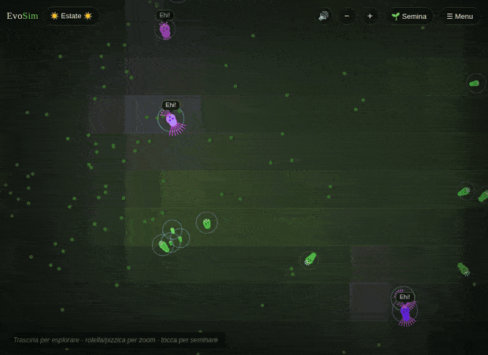
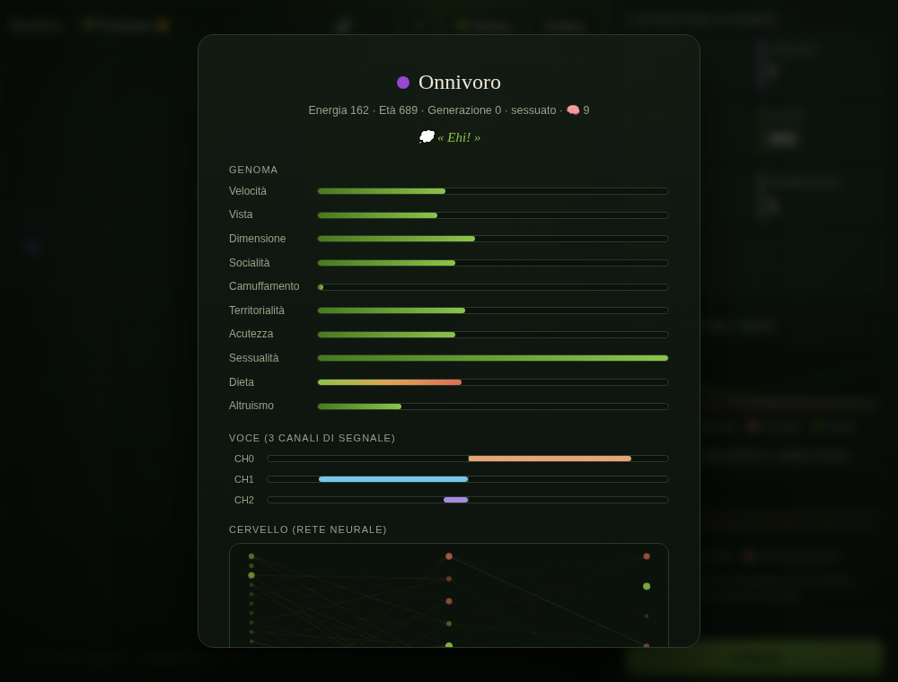
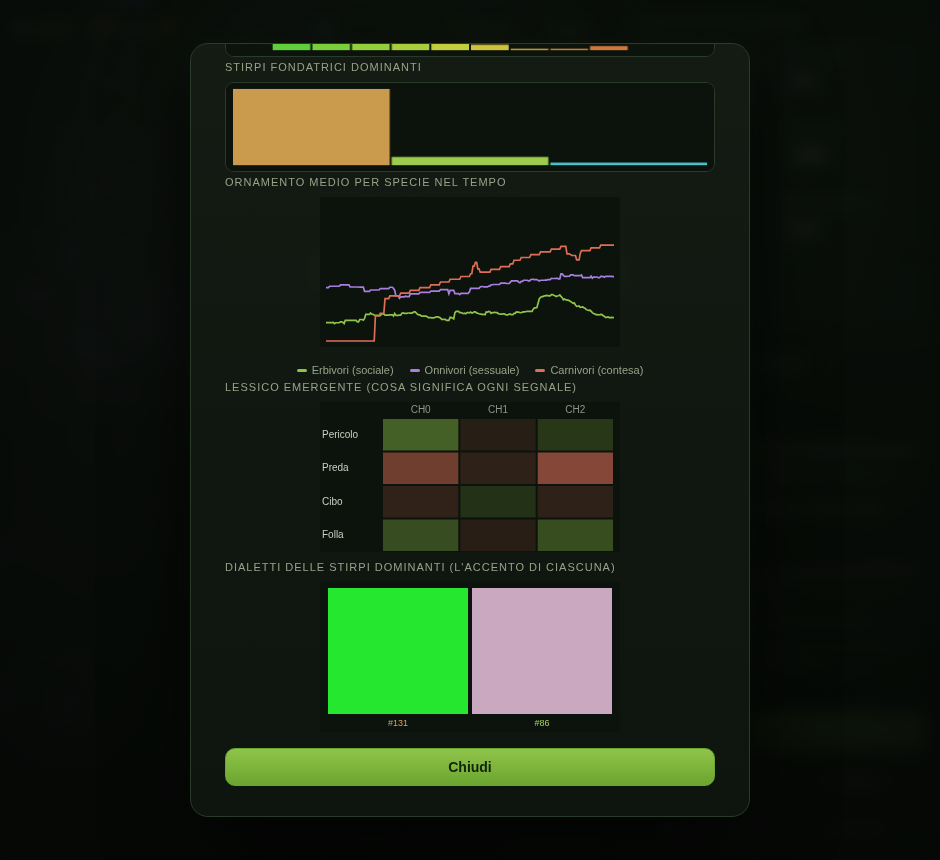
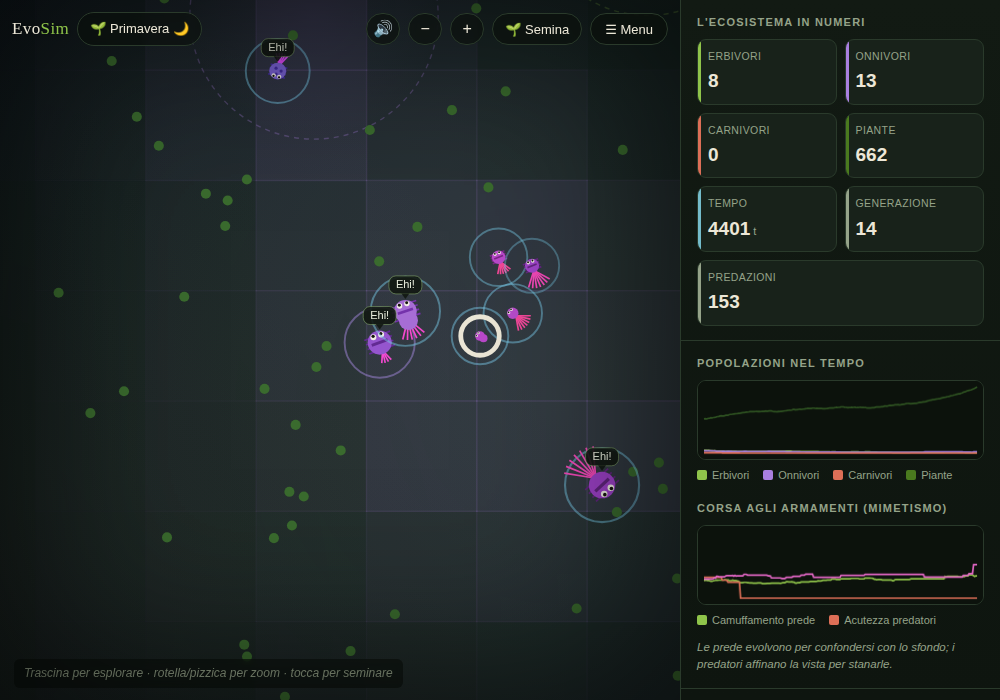
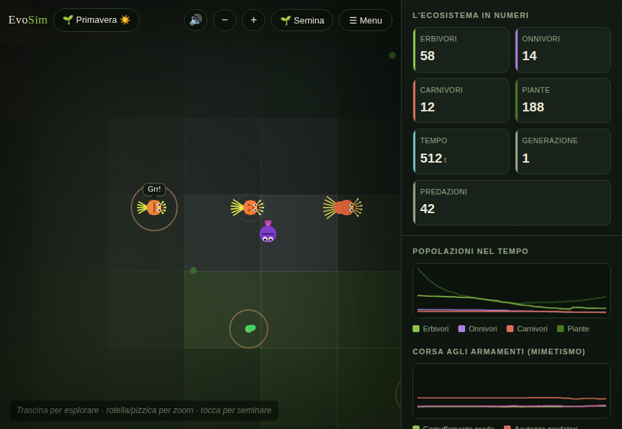
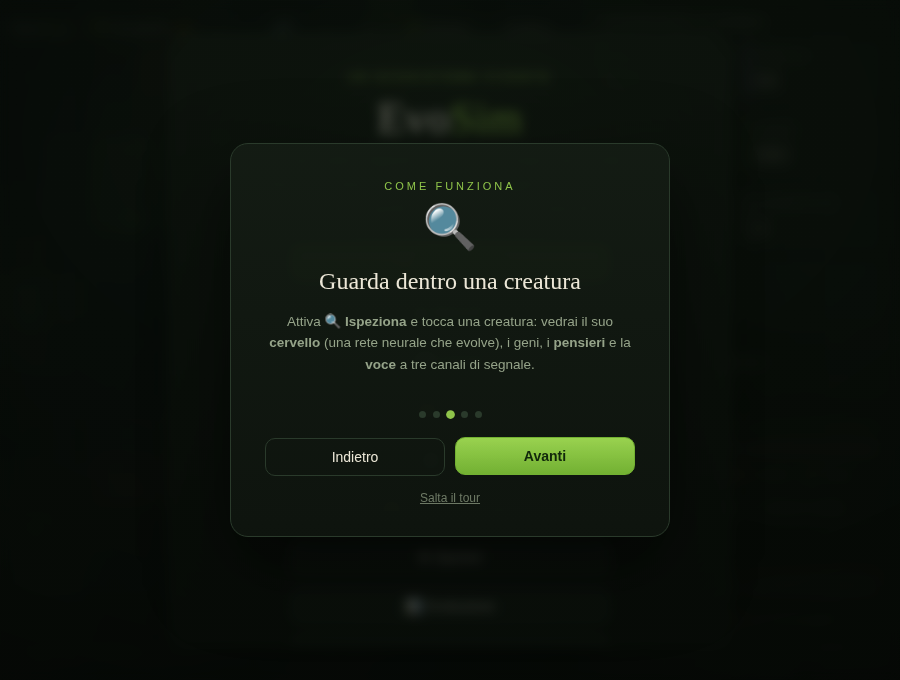

Vita artificiale · nel browser
In una radura digitale, la vita trova sempre una strada. Creature che nascono, cacciano, parlano, cooperano ed evolvono — nessuno le guida, se non la selezione naturale.

Ogni creatura è guidata da una piccola rete neurale ricorrente: i suoi pesi sono il suo genoma, e cambiano per mutazione, ricombinazione e — a volte — apprendimento durante la vita. Tutto il resto (branchi, cacce, allarmi, linguaggi, ornamenti, società) non è programmato: emerge dalla selezione, generazione dopo generazione.

Cervelli che evolvono — e imparano
Ogni creatura ha vista direzionale, memoria e uno strato nascosto che può crescere o rimpicciolirsi per mutazione, con un costo metabolico: la complessità si accumula solo se ripaga. Oltre all'evoluzione, un sottile apprendimento durante la vita le fa adattare all'esperienza — l'effetto Baldwin in azione.

Un linguaggio che emerge
La comunicazione è a tre canali il cui senso è libero di evolvere. Un misuratore calcola dal vivo cosa ciascun segnale ha finito per significare (pericolo, preda, cibo, folla), e le singole stirpi sviluppano dialetti distinti — un "accento" proprio. La cultura si trasmette per imitazione, più veloce dei geni.

L'aspetto plasmato dalla scelta
L'aspetto non evolve solo per sopravvivere. Gli onnivori vivono la selezione sessuale (i partner scelgono i più appariscenti — il runaway di Fisher); i carnivori sviluppano armi da intimidazione per contesa; gli erbivori un ornamento sociale bilanciato. Manto, corona e coda a ventaglio crescono col gene.

Una società che si forma
Gli individui condividono energia con i parenti affamati, cacciano in branco, lanciano allarmi che rendono il gruppo più difficile da predare. Lasciano scie odorose che altri seguono, e dove una specie si raduna spesso nasce un nido che protegge i piccoli. Struttura sociale, non scriptata.

Osservabilità profonda
Un Diario annota gli eventi notevoli — estinzioni e ritorni, nuovi linguaggi, nidi che nascono, ornamenti che esplodono — e ci clicchi sopra per saltare sul posto. Ispeziona un cervello, guarda il lessico e gli ornamenti nel tempo, naviga l'albero genealogico. Salvataggi automatici, italiano ed inglese, mobile incluso.
EvoSim non finge di creare coscienza. Ciò che vedi è emergenza reale — comportamenti che si diffondono, segnali che acquistano significato, tratti che vengono selezionati — non una mente. Il "linguaggio" è un piccolo vocabolario il cui senso emerge dall'uso; le "nuvolette dei pensieri" traducono lo stato interno reale di una creatura, non lo inventano. E fenomeni come il runaway degli ornamenti restano stocastici: a volte li vedi esplodere, a volte no — proprio come in natura.
Nessun framework, nessuna build. Una singola pagina che gira ovunque.
Moduli ES nativi, rendering su HTML5 Canvas, griglia spaziale per la performance con centinaia di creature.
Neuroevoluzione con topologia variabile, ricombinazione dei genomi, speciazione per isolamento riproduttivo.
Audio sintetizzato senza file, salvataggi in localStorage, pubblicato su GitHub Pages. Apri e gira.